LitFest GuidePress note · For immediate release · 24 November 2026
New, free and open source
A pocket guide to who speaks at India’s literature festivals
LitFest Guide gathers the speaker lists of 16 Indian literature festivals into one app. Readers can see who is coming, who is new, who keeps coming back, and which books to pick up before they go.
Works on any phone or laptop. Installs like an app, opens offline, needs no account.
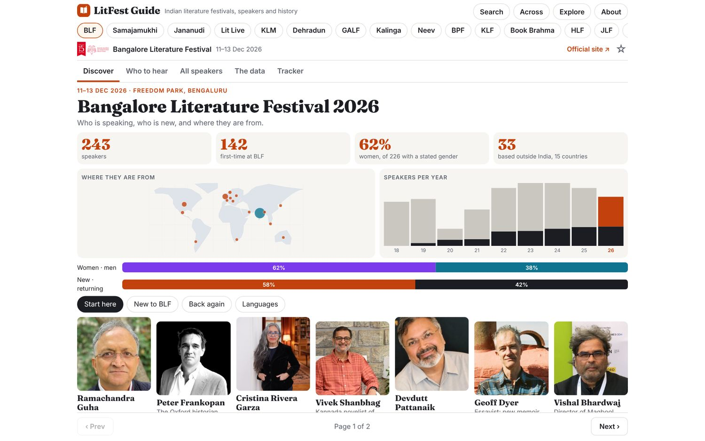
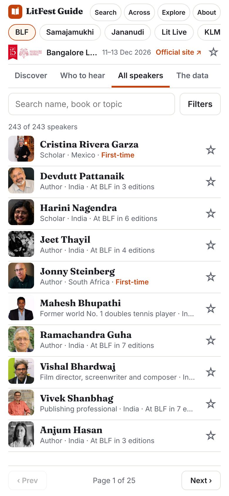
16festivals with speaker data, from Bengaluru to Jaipur, Kolkata, Kozhikode and Bhopal
8,500writers, thinkers and artists tracked across 2016 to 2027
13,700festival appearances, so you can see who returns
2,500book entries, with covers, to start a reading list
Every festival has a programme. Nobody had the whole picture.
Each festival publishes its speakers on its own website, in its own format, and last year’s list quietly disappears. A reader who loves Kannada poetry, or wants to catch the debut novelists, or simply wonders whether a favourite author tours the circuit, has had to open a dozen tabs.
LitFest Guide puts the lists side by side. Each festival gets one clean page per view, built for a thumb on a phone, with photos, countries, roles and past appearances.
See a festival at a glance
Open any festival and the first screen answers the questions readers ask: how many speakers, how many are first-timers, how many are women, where they are from, and how the line-up has grown since 2018.
Photos and short bios, with a prompt for who to hear first
Filters for new faces, returning guests and languages
A one-tap star on any speaker for your own shortlist
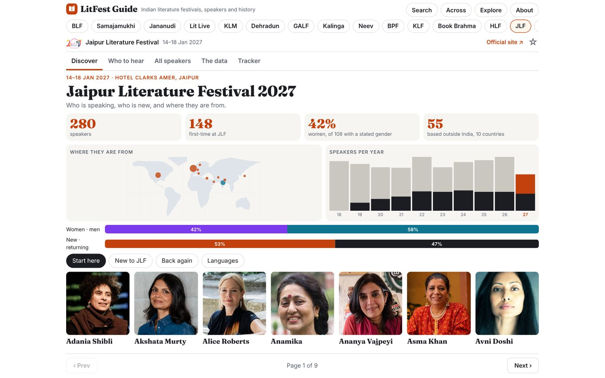
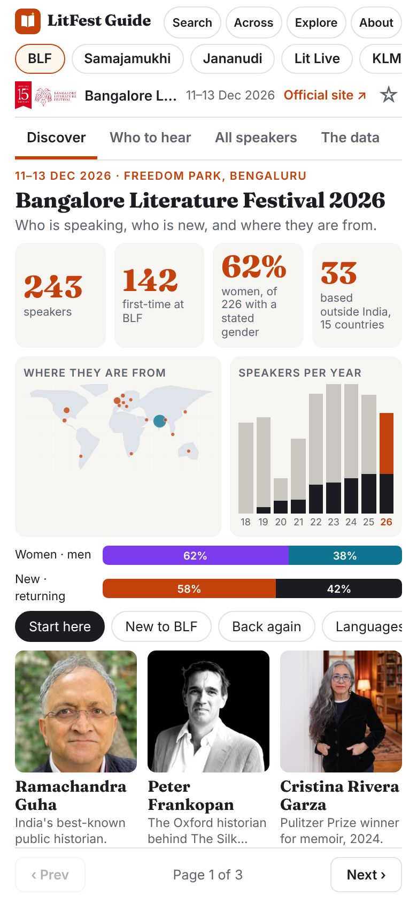
Follow writers across festivals
The Across view is a grid of every festival against every other, showing how many speakers they share. Jaipur and Bengaluru overlap by more than 300 people. Tap any square for the names. Search finds one person across every festival and year at once.
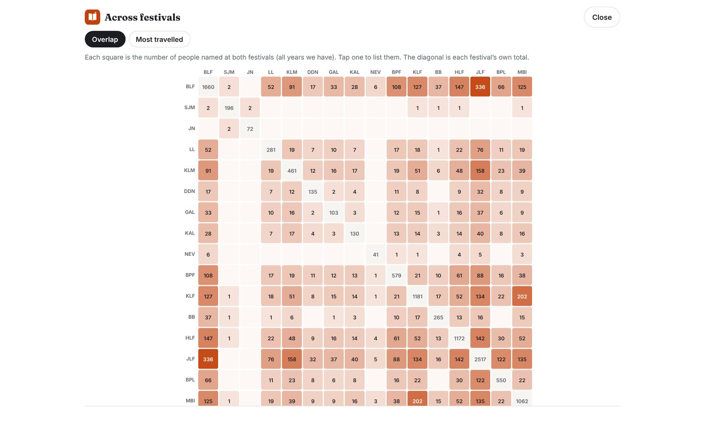
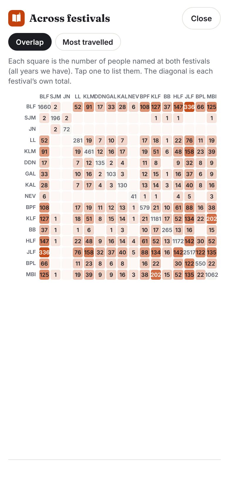
A bookshelf made of the festivals’ own books
Explore turns the data into things a book lover will enjoy browsing. The Shelf draws more than 800 books as spines on a wooden shelf; tap one for its cover, author and festival.
Debuts: authors grouped by the decade of their earliest listed book
Prizes: who has won the Booker, Sahitya Akademi, JCB and more, with a timeline
Translators: which languages the translators work from
Trails: pick history, poetry or children’s books and get a reading route
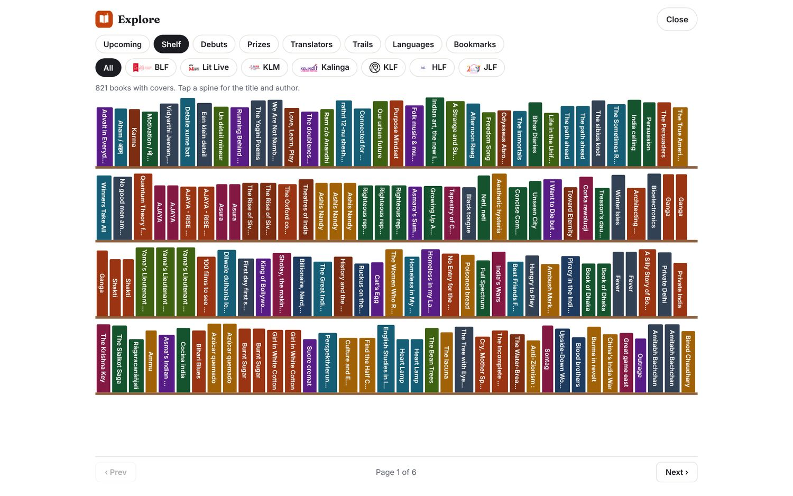
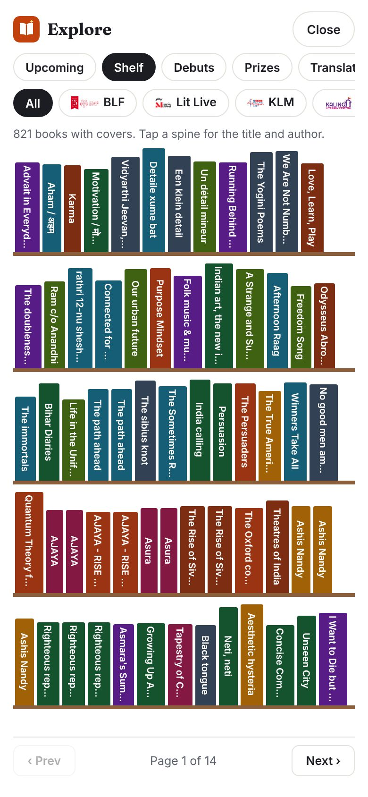
Never miss a festival
The Upcoming tab counts down to every festival, adds the dates to your calendar with a reminder the day before, and can show a banner when a festival you follow is a week away. Bookmark festivals and speakers and they are waiting in one place.
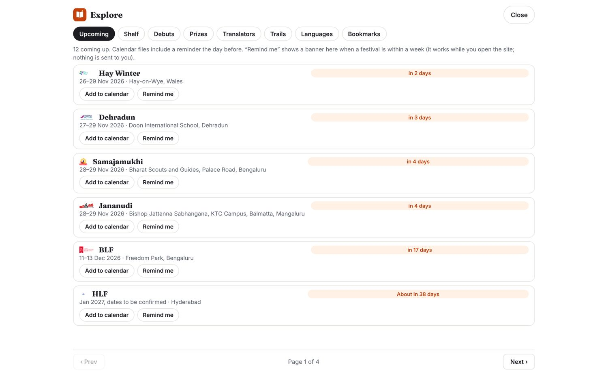
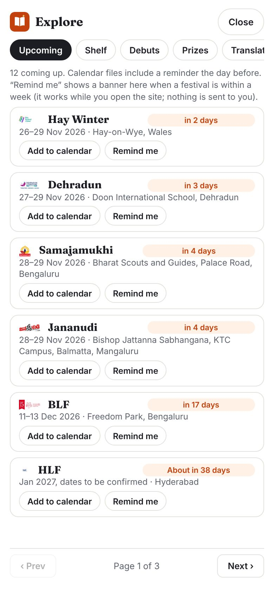
Festivals covered
Bangalore Literature Festival
Jaipur Literature Festival
Hyderabad Literary Festival
Kerala Literature Festival
Mathrubhumi International Festival of Letters
Tata Literature Live, Mumbai
Kolkata Literary Meet
Kalinga Literary Festival
Goa Arts and Literary Festival
Bhopal Literature and Art Festival
Dehradun Literature Festival
Neev Literature Festival
Bengaluru Poetry Festival
Book Brahma
Samajamukhi
Jananudi
Galle Literary Festival, Sri Lanka (dates listed)
Edinburgh International Book Festival (coming)
Hay Festival and Hay Winter Weekend (dates listed)
Samajamukhi and Jananudi are Kannada festivals, with their programmes entered by hand from printed invitations. International festivals are being added as their speaker lists are published.
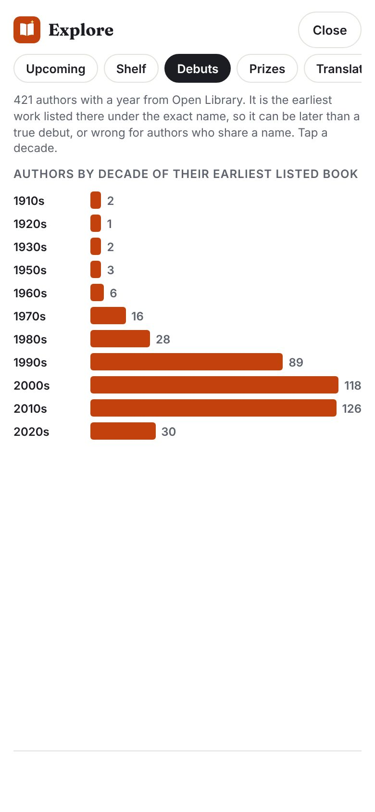
Debuts by decade
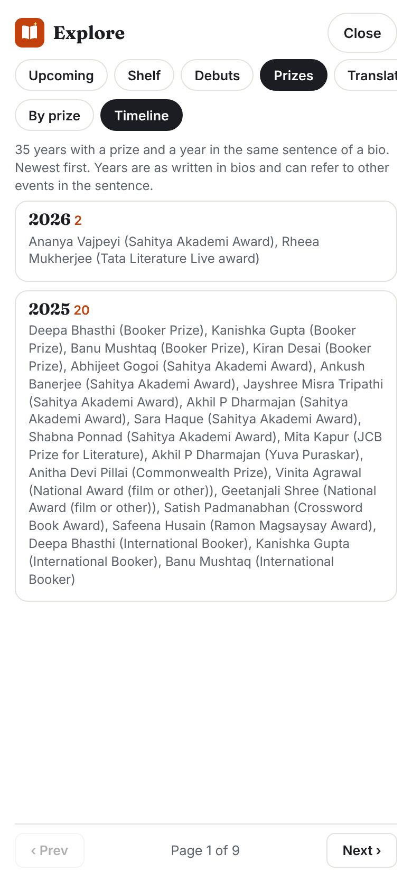
Prize timelineThe shelfUpcoming festivals
At a glance
Cost
Free. No ads, no account, no tracking. Your stars and bookmarks stay in your own browser.
Works on
Any modern phone, tablet or laptop browser. Install it to the home screen like an app.
Offline
After one visit, every festival’s data opens without a connection.
Open source
MIT licence. The data, the app and the tools that build them are public.
Notes for editors. LitFest Guide is an independent project for education and research. It is not affiliated with, endorsed by or sponsored by any festival. Speaker lists come from each festival’s public pages; gender, country and role are inferred from bios and can be wrong or blank; books are matched by author name through Open Library. The festivals’ own sites are the final word on programmes. Corrections and removal requests are welcome through the project’s GitHub issues.